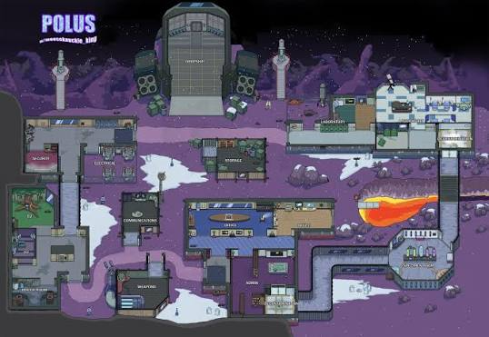

La nave espacial clásica y el mapa más emblemático. De tamaño mediano, tiene pasillos equilibrados, cámaras de seguridad y es ideal para aprender la mecánica del juego.

La sede flotante de la organización en rascacielos. Es el mapa más pequeño; destaca por tener todas sus alcantarillas conectadas entre sí y un registro de sensores de movimiento en el pasillo principal en lugar de cámaras.

Una base de investigación en un planeta nevado y volcánico. Es un mapa grande y abierto que introduce cámaras con monitores portátiles, cámaras de desinfección y la expulsión a la lava.

Un dirigible gigante inspirado en el universo de Henry Stickmin. Es el mapa de mayor tamaño, e incluye mecánicas únicas como plataformas móviles, escaleras y la opción de elegir en qué habitación reaparecer.

Una isla desierta y salvaje llena de selva y hongos gigantes. Destaca por sus zonas para esconderse, tirolinas para desplazarse y sabotajes con esporas que alteran la visibilidad de los jugadores.